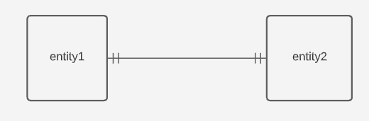
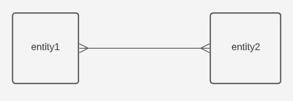
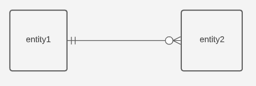
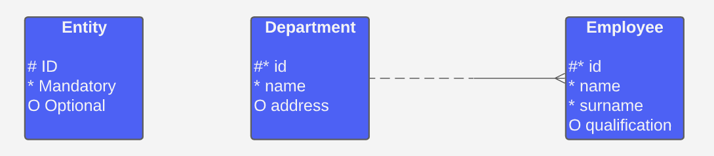

Database Fundamentals
Session 2

- Design and visualise an entity relationship diagram for a database
- Identify starting points for overcoming project and technical problems
- Implement quality control measures and know how to assure the quality of data uploads and query output
All data objects required by the database are accurately represented
A data model helps design the database at the conceptual, physical and logical levels
Data model structure helps define relational tables, primary and foreign keys as well as stored procedures
It provides a clear picture of the base data
It can help identify missing or redundant data
Types of Data Models
Conceptual
Logical
Physical
Types of Data Models
Conceptual
Logical
Physical
An organised view of database concepts and their relationships. The purpose is to establish:
Entities
Attributes
Relationships
| customer |
|---|
| Customer Name Customer Number |
Sale
→| product |
|---|
| Product Name Product Price |
Characteristics of a Conceptual Data Model
Offers organisation wide coverage of business concepts
Designed and developed for business audiences
Developed independently of hardware specifications like storage capacity, or software specifications like DBMS technology. The focus is to represent data as a user would see it in the 'real world'
Types of Data Models
Conceptual
Logical
Physical
Used to define the structure of data elements and set relationships between them. This type of model:
Adds further information to the conceptual data model
Provides a foundation for a physical model (yet retains a generic structure)
Does not require keys, you just need to verify the connector details set for earlier relationships
| customer | |
|---|---|
| Customer Name Customer Number |
string
integer |
Sale
→| product | |
|---|---|
| Product Name Product Price |
string
integer |
Common Data Types
string/character/varchar
integer
number/float/decimal
datetime
boolean
Characteristics of a Logical Data Model
Describes data needs for a single project but could integrate with other logical data models based on the scope of the project
Designed and developed independently from the DBMS
Data attributes will have data types with exact precisions and length
Normalisation processes to the model is applied typically till 3NF
Types of Data Models
Conceptual
Logical
Physical
Describes a database specific implementation of the data model. This type of model:
Offers database abstraction and helps generate schema through the rich meta-data
Helps visualise database structure by replicating column keys, constraints and other RDBMS features
| customer | |
|---|---|
| Customer Name Customer Number |
string
integer |
| Primary Key Customer Number | |
Sale
→| product | |
|---|---|
| Product Name Product Price |
string
int |
| Primary Key Product Name | |
Characteristics of a Physical Data Model
Contains relationships between tables
Developed for a specific version of a DBMS, location, data storage or technology to be used in a project
Columns should have exact data types, lengths and default values assigned
Primary and foreign keys, views, indices, access profiles and authorisations are defined
Components
Entity
Relationship
Attribute
Components
Entity
Relationship
Attribute
Where the data is stored (e.g. a table in a RDBMS)
| Entity |
|---|
|
Attribute1 Attribute2 Attribute3 |
Strong Entitiy
Has a primary key and does not depend on another entity to exist
E.g. student information
Weak Entitiy
Depends on another entity to exist
I.e. the primary key is a foreign key in another table
E.g. student enrolment information
Components
Entity
Relationship
Attribute
Defines how two entities are related to each other
Represented as lines with a "cardinality" that explains the number of instances between two entities
One to One Relationship
One record of an entity is directly related to another record of an entitiy
One to Many Relationship
One record of an entity is related to one or more records of another entity

Many to Many Relationship
Many records of one entity can be related to many records of another entity
One or Zero to to Many Relationship
One record of an entity is related to zero, one or more records of another entity
Components
Entity
Relationship
Attribute
A property of an entity or something that can be used to describe an entity
| Attribute Type | Description | Example |
|---|---|---|
| Simple | Cannot be split into other attributes | First name, surname |
| Composite | Can be split into other attributes | Name (can be split into forename, middle name and surname) |
| Derived | Calculated or determined from another attribute | Age of record calculated from creation date |
Barker Notation
Spotify

What is its purpose?
Stream music based on artists, albumns, playlists or genres
What is the user input?
Track title, album title, artist name or playlist title
What will the user receive?
Music content
Spotify
What database tables are required?
Artists
Albums
Playlists
Tracks
Users
Activity
The state of Iowa wants to design a database that records alcohol sales from all stores in the state.
Using the information on the following slide, design an ERD to show how how the database should bs structured.
| Entity | Transaction | Product | Store | County |
|---|---|---|---|---|
| Attributes | ID Date item_no store_id |
item_no description case_cost proof |
store_id store_name address county |
county population |
Data Warehouse vs Database
| Data Warehouse | Database | |
|---|---|---|
| Processing | OLAP | OLTP |
| Structure | Denormalised table containing repeated data | Highly normalised with different tables |
| Optimisation | Rapidly executing low number of complex queries on large multi-dimensional datasets | Updating, deleting and modifying data |
| Timeline | Historical Data | Current real-time data |
| Uptime (SLA) | Regular downtime to allow batch uploads | Appox 100% uptime |
| Query Type | Complex Queries for in depth analysis | Simple Transactional |
Online Transactional Processing (OLTP)
OLTP provides transaction orientated applications, administering day to day transcations of an organisation. For example:
Supermarkets
Online banking
Airline ticket booking
Adding items to a shopping cart
Online Analytical Processing (OLAP)
OLAP consists of data analytics tools that are used for making business decisions. It provides an environment to leverage insights from multiple database systems at one time. For example:
Recommendation algorithms (e.g. Spotify suggested, Amazon products)
Virtual assisstants (e.g. Alexa, Siri)
Targeted Adverts
Suggested LinekedIn connections

Data Integration Sources
Text Files
Databases
Spreadsheets
Applications
Increased availability of data
Superior data integrity and quality
Collaboration opportunities
Greater insights and improvements
Improved data consistency
Benefits of Data Integration
Batch
Data transfered from source to target in groups periodically
Data formats and layouts must be consistent between source and target
Source and target are 'asynchronus' (source doesn't wait for target to process data)
Real-time
Data transfered from source to target instantly
Involved a much smaller amount of data and used when it is necessary to complete a single transaction
Source and target are 'synchronus' (changes in source are reflected in target)
1. Scoping
2. Profiling
3. Design
4. Testing
5. Implementation
Technical Requirements
Business Requirements
Data Requirements
Operational Requirements
1. Scoping
2. Profiling
3. Design
4. Testing
5. Implementation
Understand our data
- Duplicates
- Null values
- Format
- Data Types
- Values
1. Scoping
2. Profiling
3. Design
4. Testing
5. Implementation
Decide on the architecture of the data warehouse using business, technical and operational metadata
1. Scoping
2. Profiling
3. Design
4. Testing
5. Implementation
Validation and verification of coding interface
Test the process works
User Acceptance Testing (UAT)
Technical Acceptance Testing (TAT)
Performance Stress Testing (PST)
1. Scoping
2. Profiling
3. Design
4. Testing
5. Implementation
Implement the process at an operational level
You must specifiy security policies (e.g. who has access?)
Data integrated should be immutable (unchanging)
Validation checks should be carried out during the process
- Validate the source and target table structure and data types
- Validate the column names against a mapping document
Verification is also carried out on the Data Warehouse
- Verify the data is accurate
- Verify the data is correct
- Verify the data has not been duplicated in the Data Warehouse
If you are wanting to use Business Data...
Get Permission from the Data Owner!
Data owners are given the right to decide who can have access to enterprise data.
The process involved may be something like this:
A person (staff member, contractor, supplier, etc) requests access to information
A business resource (Data owner, manager) will review the request
A techinical resources (usually a DBA) physically grants permission to an application, database or other data store containing the data.
Often the permission follows a CRUD schema (create, read, update, delete)
Step 1
Divide the books among the team so every person has an allocation

Step 2
Each person will keep a record of the occurrences of each word in their allocation
| Word | Count |
|---|---|
| Apple | 2 |
| Bird | 7 |
| Word | Count |
|---|---|
| Apple | 5 |
| Bird | 1 |
Step 3
Finally combine the different records into one unified view which contains each word in the library.
| Word | Count |
|---|---|
| Apple | 7 |
| Bird | 8 |

Extraction is the process of gathering data from a variety of disparate sources
The extracted data is usually copied from the source, not moved
Validation occurs at this stage to ensure the data is in the correct structure and format, as well as ensuring necessary permissions have been given
The process can be continuous or done in batches
Extract
Transform
Load
Transformation is the process of ensuring the extracted data is in a consistent format
This can include removing null values, changing data types and ensuring field names are the same
As the extracted data is a copy, the original will remian unchanged
Extract
Transform
Load
Loading is the process of joining the transformed data together into a single unified view (called the target)
Data verification is undertaken post loading to ensure the combined data is accurate and fulfils the necessary business requirements
With 'Big Data' this process is done using parallel processing to manage the large volume of data being written to the system
Extract
Transform
Load
a
Benefits
Allows for a unified view of data that is otherwise spread out across an organisation
Ensures data consistency across an organisation allowing for missing data and errors to be identified throughout a pipeline
Encourages collaboration across teams
Better business intelligence and insights for making decisions through greater data availability
Information Structure and Rules
Data integration activities for data warehouses requires that you follow some basic rules:
- Security policies must be specified by organisations providing data sources to prevent data leakage and unauthorised access
- Access layers (e.g. networks, firewalls, servers, etc) between sources and targets should be properly configured (especially of data is sourced externally)
- Integrated data should be immutable- you should not be able to change the data once it is stored in the unified view
- Validation checks should be carried out during ETL:
- Source and target table structures and data types should be consistent
- Column names should be the same as defined by a mapping document
Information Structure and Rules
Data integration activities for data warehouses requires that you follow some basic rules:
- Verification is also carried out on the target:
- Verify that the data is accurate
- Verify the data is the 'right' data to be stored in the target
- Verify the data has not been duplicated
Things to consider
What were the data sources?
How did you transform the data into a consistent format?
How did you join the data together?
How did you verify the accuracy of your integrated data?
How did you address security risks?
What was the benefit of combining your data?
- Design and visualise an entity relationship diagram for a database
- Identify starting points for overcoming project and technical problems
- Implement Quality Control measures and know how to assure the quality of data uploads and query output
| Assignment | |
|---|---|
| Database Design | |
| Use a work-related dataset to design your own relational database. You should describe the dataset, follow the normalisation steps and create an Entity Relationship Diagram (ERD). | |
| Word Count | Max 1500 words |
| Deadline | 3 weeks |
| Deliverables | Word Document, PowerPoint, Excel File, PDF, Lucid Chart |